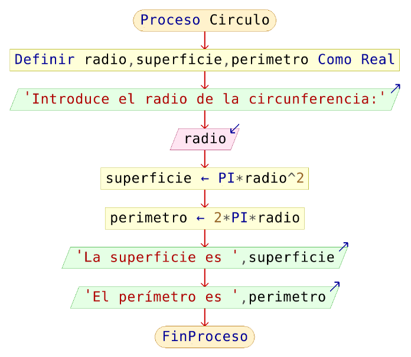

Aleatorio:Es algo que no sigue una pauta definida ejemplo en un experimiento aleatorio si hay mas de un resultade posible y no podemos decir con anteriorded lo que va a suceder, en este caso depende del azar,no sigue una pauta definida.
Algoritmo:Secuencia de pasos para solucionar un problema.
El seudocódigo es una herramienta utilizada en la programación y el diseño de algoritmos para representar la lógica de un programa de manera más abstracta y legible que el código real en un lenguaje de programación. Su propósito principal es permitir la planificación y la comunicación de algoritmos sin preocuparse por la sintaxis específica de un lenguaje de programación.

Nemotecnica:Consiste en dividir la informacion en grupos mas pequeños, como numeros palabras o frases para facilitar su aprendizaje Conjunto de estrategias que ayudan a retener ideas complejas de manera sencilla.
Secuencial:Serie de eventos, procesas o procedimientos que ocurren en un orden determinad uno tras otro.
Condicinal: Son estructuras que permiten elegir entre la ejecucion de una accion u otra.
Variable: Representa un contenedor o un espacio en la memoria fisica o virtual de una computadora, donde se almacenan distintos tipos de datos (valores) durante la ejecucion de un programa.
Servidor:Un servidor, es un ordenador conectado a Internet que tiene comofuncionesprincipales almacenar páginas web generalmente escritas en HTML (HyperText Transfer Protocol), administrar bases de datos y responder a las solicitudes de los navegadores de los internautas.
Módem:Aparato que convierte las señales digitales en analógicas y viceversa, y que permite la comunicación entre dos computadoras a través de una línea telefónica o de un cable.
Red Lan:Una red de área local (LAN) es una red contenida dentro de una pequeña zona geográfica, normalmente dentro del mismo edificio. Las redes WiFi domésticas y las redes de pequeñas empresas son algunos ejemplos comunes de LAN.
Digital:Se describe el uso dominante de las tecnologías informáticas más recientes para mejorar los procesos organizativos, potenciar las interacciones entre personas, organizaciones y cosas y posibilitar nuevos modelos de negocio, entre otros aspectos.
Hosting:Es un servicio que proporciona almacenamiento para los archivos que componen su sitio web y el software, el hardware físico y la infraestructura de red que hace que su sitio web esté disponible para otros en Internet.
Router: Es un dispositivo que proporciona Wi-Fi y que generalmente está conectado a un módem. Envía información desde Internet a los dispositivos personales, como computadoras, teléfonos o tablets. Los dispositivos conectados a Internet de tu casa conforman la red de área local (LAN).
Analógico: Que presenta información, especialmente una medida, mediante una magnitud física continua proporcional al valor de dicha información.
Diagrama de flujo o flujograma:Es una representación gráfica y secuencial de un proceso o flujo de trabajo con todas las tareas y actividades principales necesarias para lograr un objetivo común.
Estructuras secuenciales:Es aquella en la que una instrucción o acción sigue a otra en secuencia. En este tipo de programación se presentan operaciones de inicio a fin, inicialización de variables, operaciones de asignación, cálculo, sumarización, entre otras.
Estructuras condicionales:Permite decidir por cuál alternativa seguirá el flujo del programa dependiendo del resultado de la evaluación de una condición. Para establecer condiciones complejas se utilizan los operadores relacionales y lógicos.